▤Collections and folders
Collections, folders inside folders to any depth, and top-level requests. Rename, duplicate, reorder, and move anything with m. The request title shows its full path, so you always know which API you're editing.
Free · MIT · macOS, Linux, Windows
REST, GraphQL, Server-Sent Events and WebSockets, with collections, environments, history, tests, and Postman and cURL import. Use the keyboard-driven terminal UI, or run -gui for a browser UI. One static Go binary, and your requests live in a plain JSON file you can commit next to your code.
Real output, with the built-in demo API running in another terminal (term-rest-client demo). -data demo.json keeps the sample collections apart from your own. run exits with status 1 when a test fails, so it drops straight into CI.
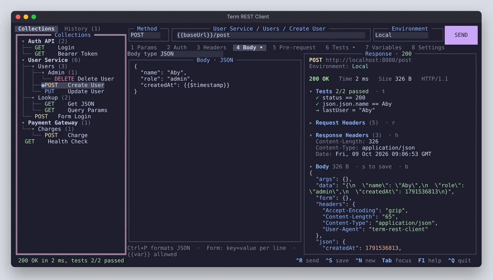
The main screen: collections and folders, the request builder with eight tabs, and the response with tests. Every screenshot on this page is generated from the real app by the project's test suite.
Features
Everything works from the keyboard, the mouse works too, and nothing needs a login or a network service of its own.
Collections, folders inside folders to any depth, and top-level requests. Rename, duplicate, reorder, and move anything with m. The request title shows its full path, so you always know which API you're editing.
Globals plus named environments like Local and Staging. Alt+E switches, a missing variable tells you where it looked, and run -env Staging picks one for a single run.
Every request you send, grouped by day, with the response it got. Open, resend, save to a collection, filter or delete. Stored in its own file, so your workspace stays clean in git.
One assertion per line: status == 200, json.items[0].id exists, time < 500. Capture values with set token = json.access_token, and prepare data in a pre-request script.
Postman collections (v2.0 and v2.1), environments and globals, with common pm.test scripts converted. Paste a curl command from browser dev tools into the URL field and it becomes a request.
Collections, folders, environments and globals export as Postman v2.1 files. Tests written here become pm.test JavaScript, so they keep running wherever the files are imported.
Ctrl+G shows the request as cURL, Python, JavaScript, Go or HTTPie, with real values or with variables kept. c copies it, and works over SSH too.
term-rest-client run "Shop API" sends saved requests, runs their tests and exits non-zero on failure. -v prints headers like curl -v, and -set overrides a variable for one run.
Unsaved edits survive a restart. Response sections fold and stay folded. Four themes, including a light one. Timeouts, redirects and TLS checks are all settings.
API types
Pick the type next to the URL. The same environments, scripts, tests and history work for all of them, and so does run on the command line.
GET, POST, PUT, PATCH, DELETE, HEAD and OPTIONS. JSON, text, XML and form bodies, Basic, Bearer and API key auth, and {{variables}} anywhere.
Query and Variables editors side by side. Ctrl+T reads the server's schema: browse types and arguments, and i writes the query for any field, nested ones included.
Server-Sent Events and NDJSON show up live, each event with its time. Esc stops and keeps what arrived, and tests can check events >= 3 or event[-1].json.done == true.
Connect with your headers and auth, send plain text or JSON, and watch a timed log of what goes out and comes back. Tests run on the received messages when it closes.
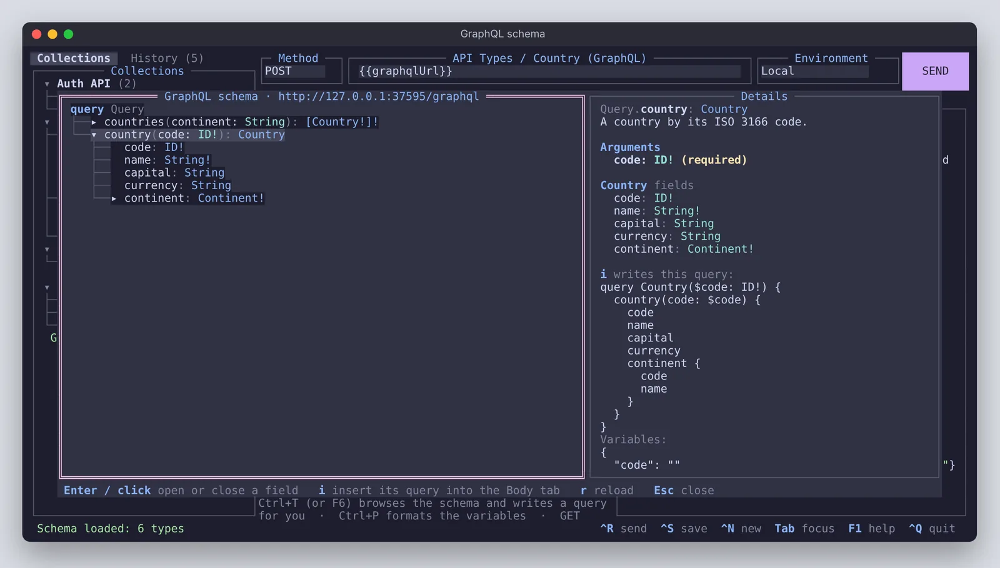
i writes the query.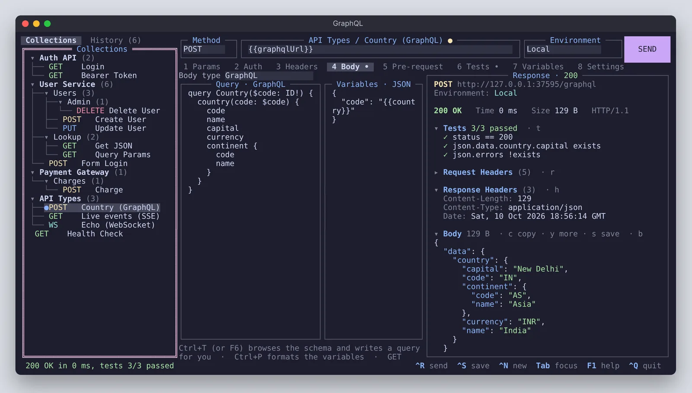
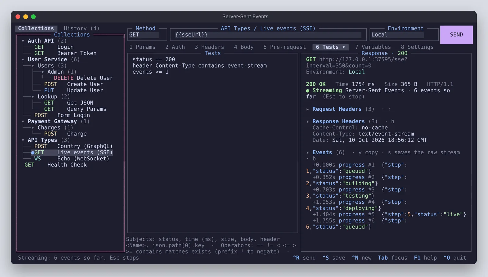
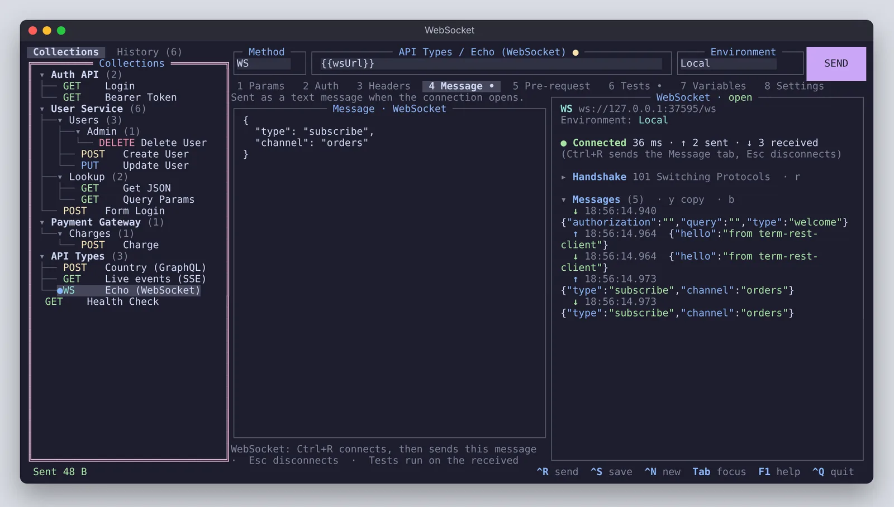
Browser UI
term-rest-client -gui opens the same workspace in your browser. The page is built into the binary, nothing is loaded from the internet, and every request is still sent by term-rest-client itself, so there are no CORS errors and streams, WebSockets, scripts and tests work exactly as in the terminal.
The browser UI following a Server-Sent Events stream. Real capture from the app.
Request tabs, the collections tree, environments, history, a JSON tree view, a GraphQL schema browser, a WebSocket composer, code snippets, cURL and Postman import (drop a file on the window) and a command palette on Ctrl+K. Light and dark.
It picks a free port on 127.0.0.1, or the one you ask for with -port, falling back when it's taken. -lan lists a link per network address. A per-run key and Origin checks keep other sites from using it.
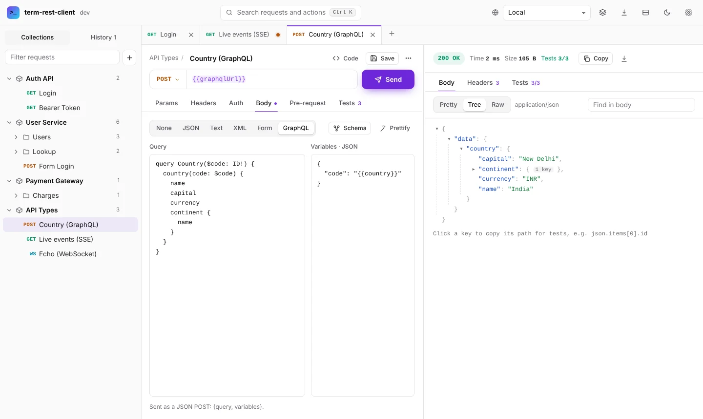
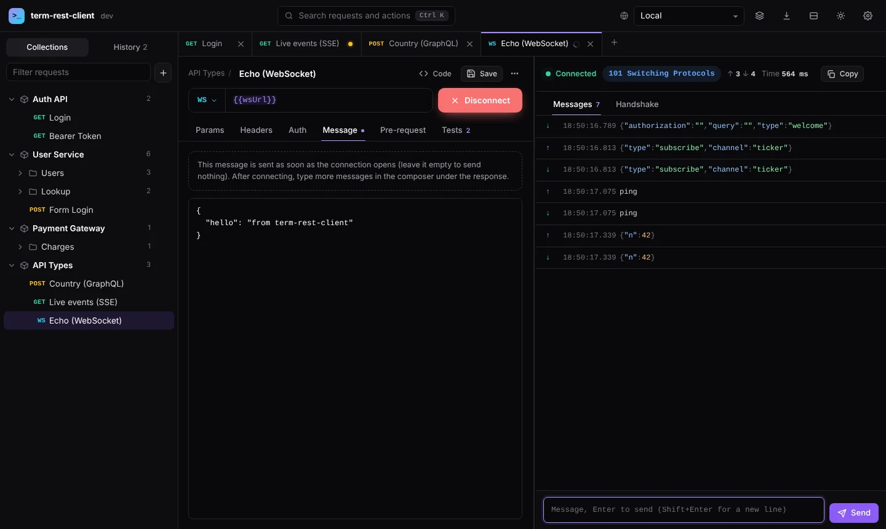
Code snippets
The sample Charge request, exactly as the app generates it. Switch languages with the arrow keys in the app, or print any of them with term-rest-client export -lang python.
curl -X POST 'https://httpbin.org/post' \
-H 'Content-Type: application/json' \
-H 'User-Agent: term-rest-client' \
--data-raw '{
"amount": 200,
"currency": "INR",
"orderId": "order-831"
}'import requests
url = "https://httpbin.org/post"
headers = {
"Content-Type": "application/json",
}
payload = {
"amount": 200,
"currency": "INR",
"orderId": "order-831",
}
response = requests.post(url, headers=headers, json=payload)
print(response.status_code)
print(response.text)const response = await fetch("https://httpbin.org/post", {
method: "POST",
headers: {
"Content-Type": "application/json",
},
body: JSON.stringify({
"amount": 200,
"currency": "INR",
"orderId": "order-831",
}),
});
console.log(response.status);
console.log(await response.text());package main
import (
"fmt"
"io"
"net/http"
"strings"
)
func main() {
payload := strings.NewReader(`{
"amount": 200,
"currency": "INR",
"orderId": "order-831"
}`)
req, err := http.NewRequest(http.MethodPost, "https://httpbin.org/post", payload)
if err != nil {
panic(err)
}
req.Header.Set("Content-Type", "application/json")
resp, err := http.DefaultClient.Do(req)
if err != nil {
panic(err)
}
defer resp.Body.Close()
data, err := io.ReadAll(resp.Body)
if err != nil {
panic(err)
}
fmt.Println(resp.Status)
fmt.Println(string(data))
}http POST https://httpbin.org/post \
amount:=200 \
currency=INR \
orderId=order-831Each language's generator is checked by the test suite. Every snippet is run with python3, node, go and http against a local server, and has to deliver the same method, URL, headers and body as the app itself.
Screens
Each one is rendered by make screenshots, which drives the app on a simulated terminal and keeps the exact colours it draws.
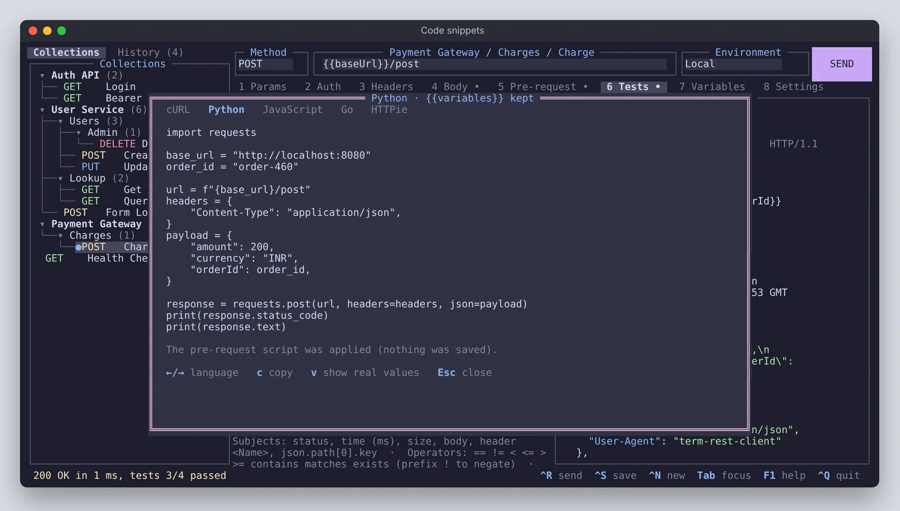
{{variables}} kept as real variables.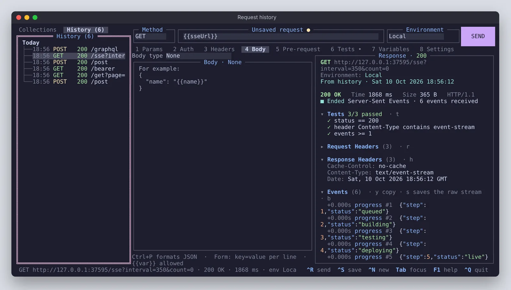
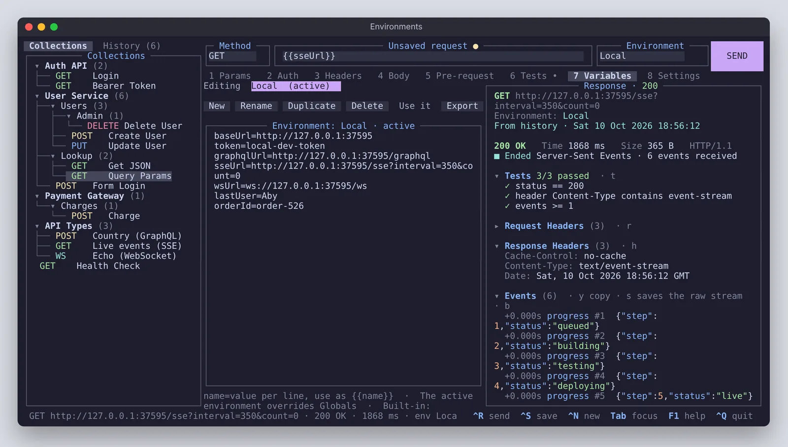
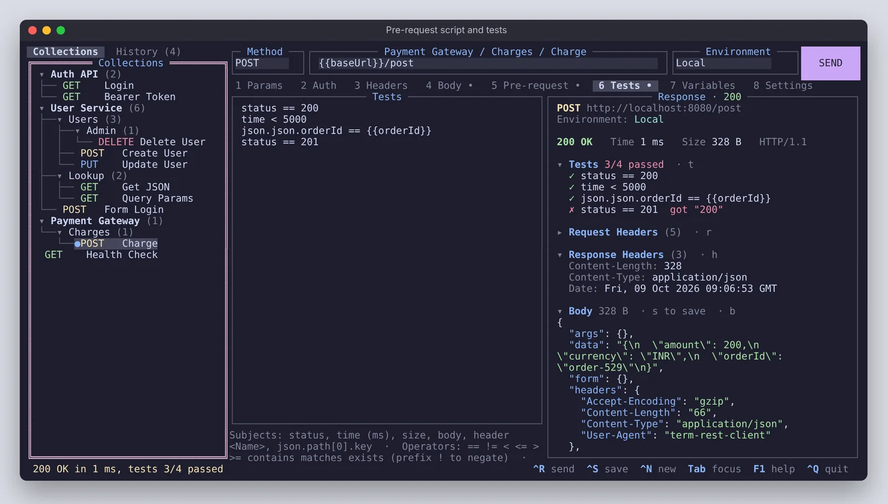
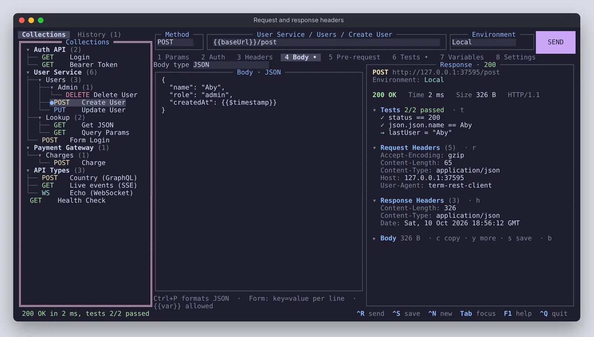
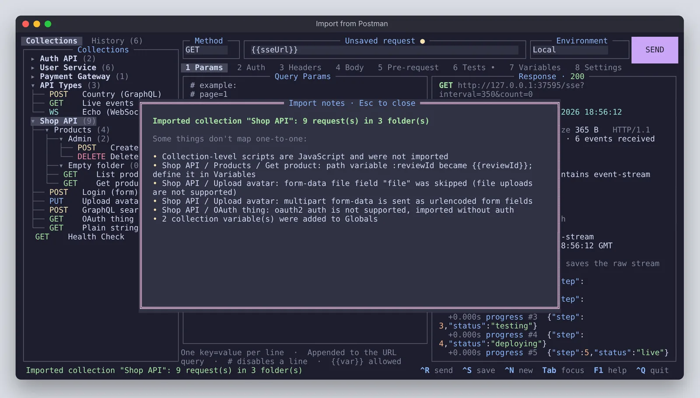
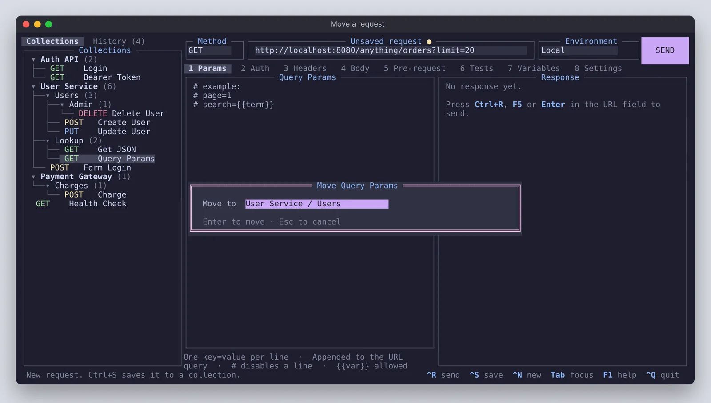
m to move things.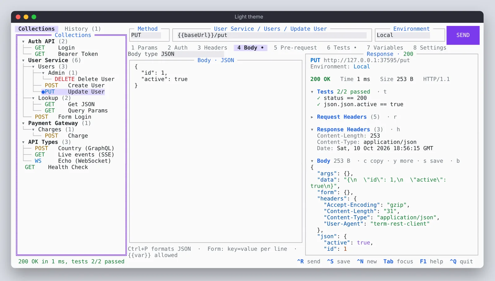
Keyboard
F1 shows the full list in the app. Plain letters only act as shortcuts outside text fields, so typing never triggers a command.
Install
The installer picks the right binary for your machine, checks it against the release's SHA-256 sums, and puts it on your PATH.
# Apple Silicon or Intel Macs, Linux on x86_64 or arm64
curl -fsSL https://raw.githubusercontent.com/AbyAbyss/cli-rest-client/main/get.sh | sh
# needs Go 1.21 or newer (it fetches the 1.24 toolchain itself)
git clone https://github.com/AbyAbyss/cli-rest-client.git
cd cli-rest-client
./install.sh
go install github.com/AbyAbyss/cli-rest-client/cmd/term-rest-client@latest
1. Download term-rest-client-windows-amd64.zip 2. Unzip it and put term-rest-client.exe in a folder on your PATH 3. Run it in Windows Terminal: term-rest-client
Then try the samples offline: run term-rest-client demo in one terminal, and term-rest-client -data demo.json in another. The demo API answers every sample request, including GraphQL, streaming and WebSocket.
Prefer to download by hand? Every release has archives for macOS (arm64, amd64), Linux (amd64, arm64) and Windows, plus SHA256SUMS, on the releases page. If a browser download on macOS won't open, run xattr -d com.apple.quarantine term-rest-client once.
Under the hood
Collections, environments, settings and unsaved edits live in one JSON file, written atomically. History goes in a file next to it. Point -data at a file in your repo and the whole team shares the same requests through git.
The app is written in Go with tview and tcell. The tests drive the real interface on a simulated screen, typing and clicking, and pass under the race detector.
~/.config/term-rest-client/workspace.json on Linux~/Library/Application Support/term-rest-client/ on macOS%AppData%\term-rest-client\ on Windows-data FILE or TERM_REST_CLIENT_DATApbcopy, wl-copy, xclip, xsel or clip, and OSC 52 over SSH